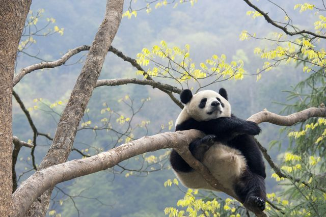

The giant panda has an insatiable appetite for bamboo. A typical animal eats half the day—a full 12 out of every 24 hours—and relieves itself dozens of times a day. It takes 28 pounds of bamboo to satisfy a giant panda's daily dietary needs, and it hungrily plucks the stalks with elongated wrist bones that function rather like thumbs. Pandas will sometimes eat birds or rodents as well.
Wild pandas live only in remote, mountainous regions in central China. These high bamboo forests are cool and wet—just as pandas like it. They may climb as high as 13,000 feet to feed on higher slopes in the summer season.
Content by National Geographic 